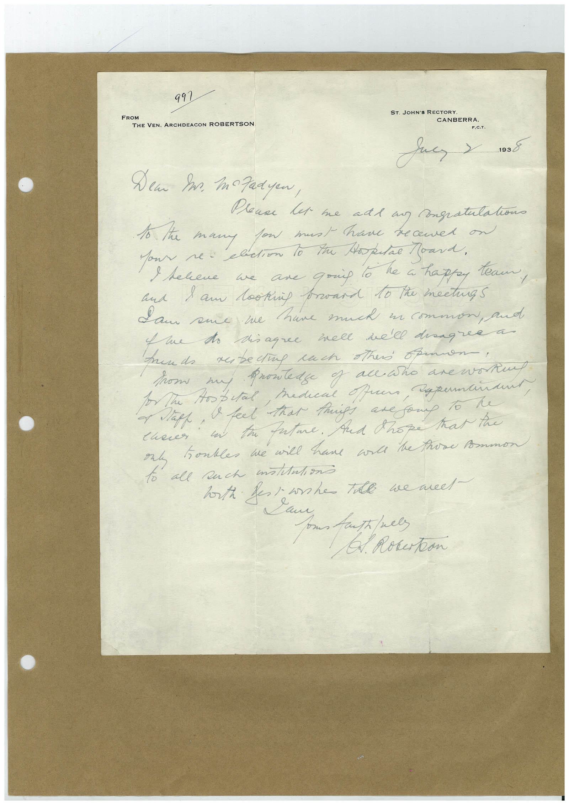

Book 1 · scan 070


Description
Transcription
Context
Review notes
Compare the machine draft with the scan. Handwriting and names need human review.
Artifacts
Edit the artifacts field in this note’s frontmatter to change these records. This summary is generated.
B01-S070-A01 — Letter — Book 1, scan 070
Types: Letter
Scope: Whole scanned page; individual items can be split out during review.
Caption: Not mapped yet.
Caption source: Not recorded yet.
Caption status: unmapped
Machine transcription
FROM 991 THE VEN. ARCHDEACON ROBERTSON ST. JOHN'S RECTORY. CANBERRA. F.C.T. 1938 Dem In. mozadyen, lena let me ade a Congratulation I the many fow must have recened on and 1 am lookip broard 10 the mectuas Sam sue we have much in common, and Yue to diagree well well dragree a Aunds rebedug rach others opennon! from to The Hospital, Mediene offers, → Nape, I feel that Prigs are gong To te an ta fatme. Aud Shore Kar tre my honkles we will have ard the those Ammon to all such milAntions horth fess she the we meet - Sau C. Rokerton